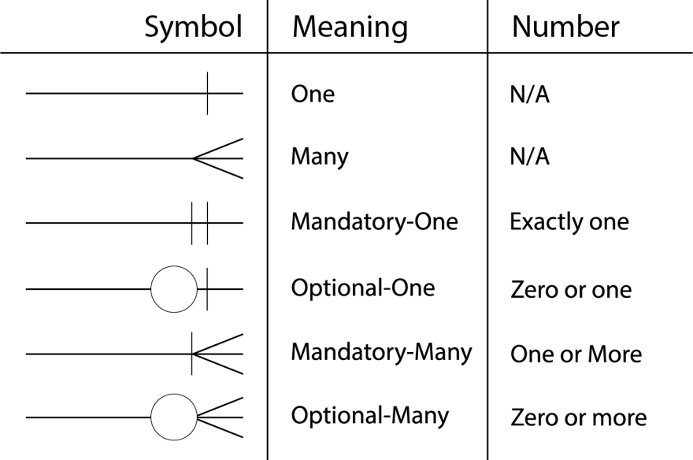

4. Databases#
Database Design Considerations:
Specific use-case: what is the need?
What data needs to be stored, & what type of data is it?
How often is will the data be updated and viewed; and by who?
What is the level of security the data requires?
How should the data be logically organized and what integrity constraints should be applied?
NoSQL (nonrelational DBMS):
Document-centered rather than table-centred. large data, structure varies. Stored in a data lake.
Unstructured data: No schema. Most data. Ex) Photos, chat lots, MP3
Semi-structured data: Self-describing structure but no larger schema. Ex) XML, JSON
RDBMS (Relational Database Management System)#
SQL (RDBMS):
Structured data: Follows a schema with defined constraints and relationships.
Stored in a data warehouse (ex: BigQuery) or data lake (ex: database or Excel table).
Cardinality:
Relationship between tables, rows, and elements in a database. Ratio denotes the number of entities that another entity can be linked to.
1:1 - one row in a table relates to exactly one row in a second table
1:N - one row in a database table relates to many rows in a second table (Primary Key-Foreign Key relationship)
N:N - many rows in one table are related to many rows in a second table
Entity-Relationship Diagrams (ERDs):
Charts that depict the entities (objects), relationships, and attributes in a database.
Crows Notation Chart: 
Normalization:
The process of breaking down tables in a database & managing the relationships between them in order to minimize redundancy.
Consider: Should my data have minimal redundancies and dependencies?
Non-normalized table issues:
missing ID record for other attribute-> deletion anomoly
update anomoly -> logical inconsistency
can’t populate new ID because missing one attribute -> insertion anomoly
Normal form levels assess danger of redundancy:
First Normal Form (1NF) - simplest - need primary key (single column or combination of columns) has one value per key.
Second Normal Form (2NF) - each non-key attribute is dependent on the entire primary key (all primary key columns).
Third Normal Form (3NF) - each non-key attribute should depend on the key, the whole key, and nothing but the key
Indexes#
Similar to indexes in books, indexes in tables improve lookup performance, but by building a tree diagram using a unique ID key
Clustered Index: index sorted by a column
Note different syntax to create clustered index in postgreSQL vs mySQL:
postgreSQL:
CLUSTER table_name USING column_name;
mySQL:
CREATE CLUSTERED INDEX index_name ON db.table_name (column_name);
Integrity#
Refers to the total accuracy, consistency, and completeness of data.
Physical: integrity of the body. Ex) issues from degraded storage, blackouts, hacker attacks
Logical: integrity across uses. Ex) creating unique primary keys without null values
ACID: ensures reliability of database transactions
Atomicity: Transactions are all-or-nothing
Consistency: Updates must adhere to data constraints
Isolation: Multiple users can access data at the same time
Durability: Committed transactions are saved to permanent storage
Constraints#
CONSTRAINT types:
Domain: acceptable data type per column
Entity integrity: unique primary key values within a table cannot be null
Referential (foreign key) integrity: uses foreign key to ensure consistent relationship between tables
CHECK- ensures that values in a column or a group of columns meet a specific condition
CREATE TABLE table_name (item VARCHAR PRIMARY KEY price NUMERIC CHECK (price > 0));
add a constraint to an existing table:
ALTER TABLE table_name ADD CONSTRAINT price CHECK (price > 0);
NOT NULL- ensures no NULL values for a given columnUNIQUE- ensures all values for a given column are differentPRIMARY KEY- combinesNOT NULLandUNIQUE
CREATE TABLE (activity_names CHAR(14) PRIMARY KEY, activity_gpx CHAR(18) UNIQUE NOT NULL, activity_tcx CHAR(18) UNIQUE NOT NULL);
FOREIGN KEY- prevents actions that would destroy links/relationships between tables
CREATE TABLE gpx_pts (filename CHAR(18) REFERENCES activity_names (activity_gpx), date TIMESTAMP PRIMARY KEY, lat FLOAT NOT NULL, lon FLOAT NOT NULL, ele FLOAT NOT NULL, speed FLOAT NOT NULL);
CASCADEremoves link between primary key (activity_names) & foreign key table:
DROP TABLE activity_names CASCADE;
Common clauses#
SELECTis the clause we use every time we want to query information from a database.ASrenames a column or tableDISTINCTreturn unique valuesWHEREis a popular command that lets you filter the results of the query based on conditions that you specifyLIKEandBETWEENare special operatorsANDandORcombines multiple conditionsORDER BYsorts the resultLIMITspecifies the maximum number of rows that the query will returnCOUNT(): count the number of rows
SELECT COUNT(*) FROM information_schema.columns WHERE table_schema = ‘public’ AND table_name = ‘table_name’;
SUM(): the sum of the values in a column
SELECT SUM(minutes) FROM runs_tcx;
MAX()/MIN(): the largest/smallest valueAVG(): the average of the values in a columnROUND(): round the values in the column
Aggregate#
Aggregate functions combine multiple rows together to form a single value of more meaningful information.
GROUP BYclause used with aggregate functions to combine data from one or more columnsHAVINGlimits the results of a query based on an aggregate property
Data manipulation#
CASE = similar to Python’s if, else statement
WHEN, THEN, ELSE, END AS sets the new column name
SELECT season,
AVG(CASE WHEN hometeam_id = 8445 AND home_goal > away_goal THEN 1 WHEN hometeam_id = 8445 AND home_goal < away_goal THEN 0 END) AS pct_home_wins,
AVG(CASE WHEN awayteam_id = 8445 AND away_goal > home_goal THEN 1 WHEN awayteam_id = 8445 AND away_goal < home_goal THEN 0 END) AS pct_away_wins,
FROM match GROUP BY season;
Joins#
inner join
links two tables, ‘table_name’ and lookuptable, ‘lut’, using a common ‘key’ column, and returns rows where ‘key’ value exists in both tables
SELECT * FROM table_name INNER JOIN lut USING (key);
left join
returns all rows from first table, table_name, with blank value where ‘key’ is missing in the second table, lut (will not have rows from second table where key is missing in first table)
SELECT * FROM table_name LEFT JOIN lut ON table_name.key = lut.key;
right join
returns all rows from lut with blank value where ‘key’ is missing in table_name (will not have rows from first table whose key)
SELECT * FROM table_name RIGHT JOIN lut ON table_name.key = lut.key;
full outer join
returns all rows from both tables
SELECT * FROM table_name FULL OUTER JOIN lut ON table_name.key = lut.key;
Views#
A query stored in a data dictionary, which acts as a proxy (virtual table) and does not hold the actual data.
CREATE VIEW / DROP VIEW used to (1) break down more complex operations, and (2) restrict users accessing certain sensitive data.
Consider: What queries will be performed most often?
View Types:
Simple - based on a single table w/ no
GROUP BYclause and functionsComplex - based on multiple tables which contain
GROUP BYclause and functionsInline - based on a subquery in
FROMclause, that subquery creates a temp tableMaterialized - creates replicas of the data to store the definition and data physically
Access control#
Consider: which users should have access to which levels of access(read/update/insert) & tables?
GRANT INSERT,UPDATE,DELETE ON table_name TO user_name;
SQL Server:
GRANT { permissions} ON SCHEMA :: {schema} TO {user};
DENY { permissions} ON SCHEMA :: {schema} TO {user};
PostgreSQL#
Store postgreSQL credentials in Linux:#
export POSTUSR={your-postgres-username}
export POSTPWD={your-postgres-pwd}
If postgreSQL was added to PATH: open a terminal
If not: in File Explorer, navigate into the directory where PostgreSQL is installed, then into the bin directory, then open a terminal.
Trust (ignore password step) in Windows:#
Right-click “C:\Program Files\PostgreSQL\16\data\pg_hba.conf” > edit with Notepad: change method from sca-… to trust
Connect to database from psql#
i) Find in install location once then pin to start/taskbar:
Server [localhost], Database [db_name], Port[5432], Username[postgres], Password for user
Note: Entering nothing submits text within brackets
From psql, create postgreSQL database#
Execute the following command to create a database called db_name, then enter user password when prompted:
createdb -h localhost -p 5432 -U postgres db_name
print databases in postgres db server:
\l
print tables in connected db:
\d